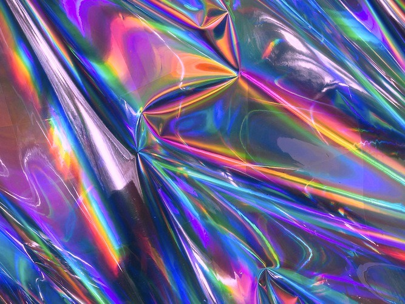
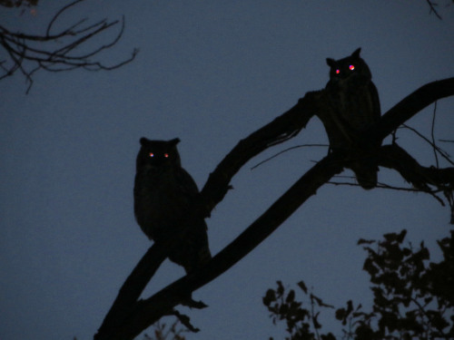
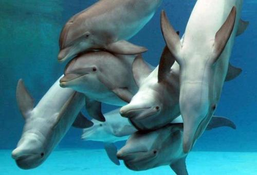
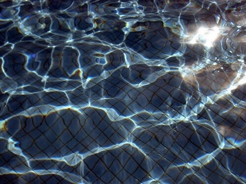
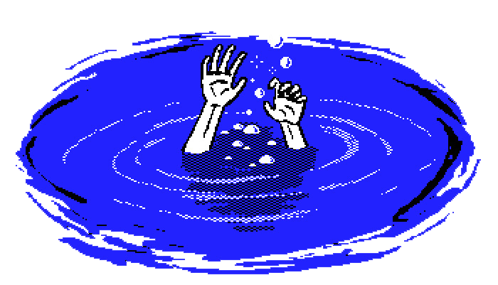
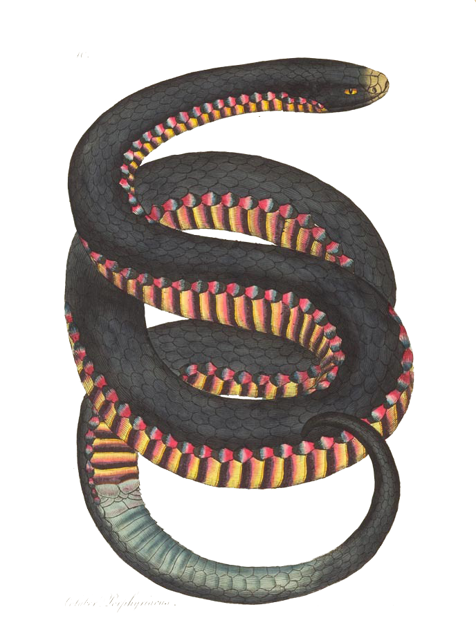
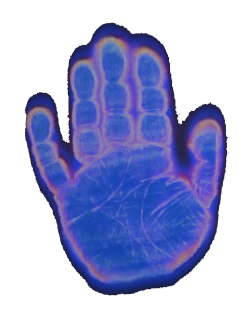
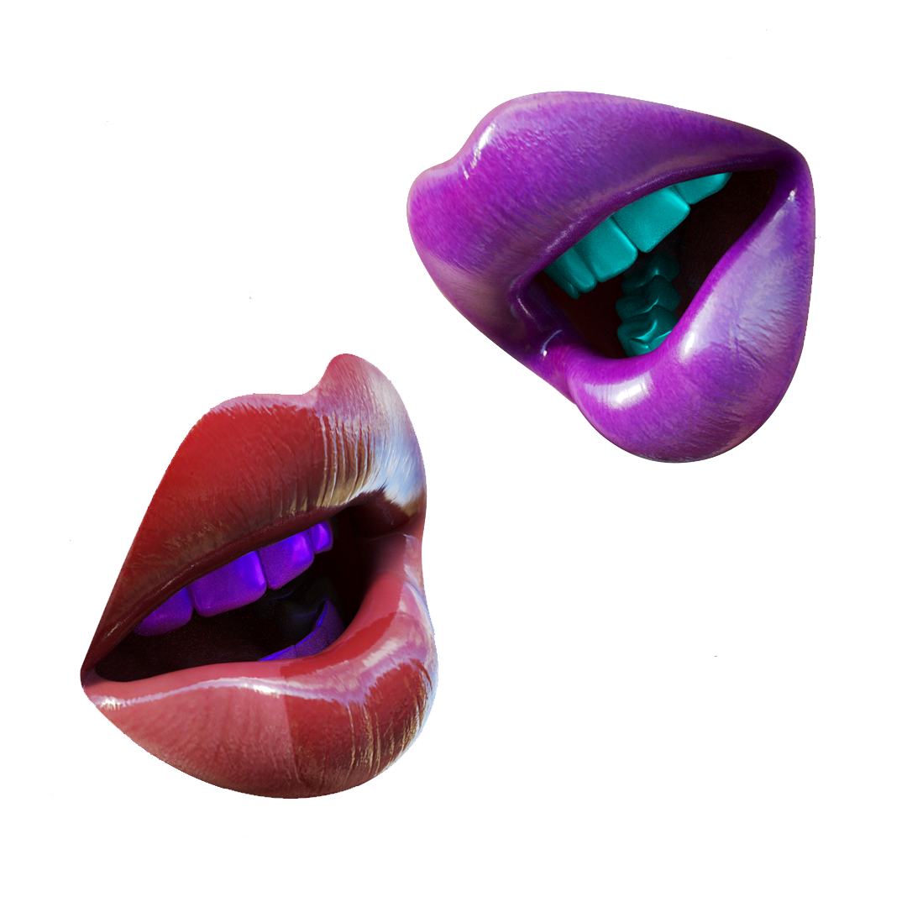
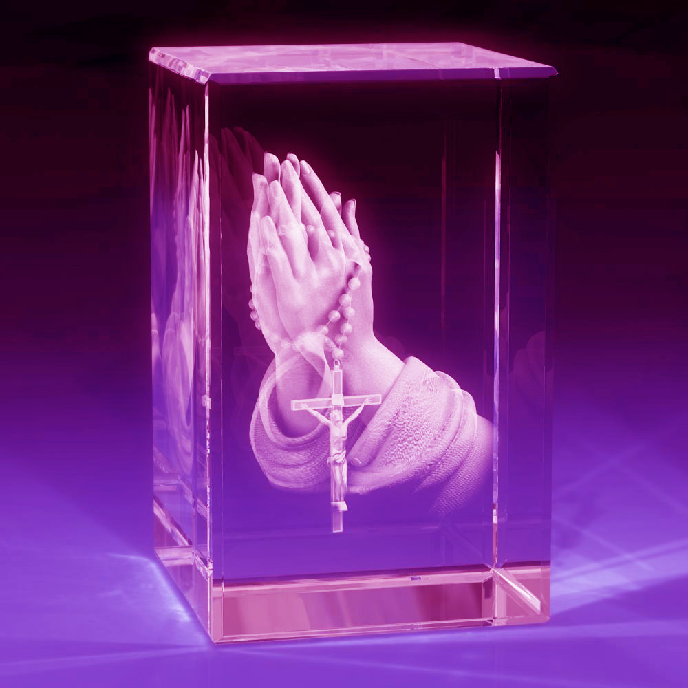
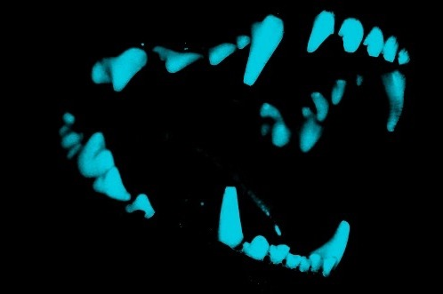

Cosmic Space: Beyond thinking or limited concepts and ego boundaries; beyond what is established already; being out of touch with reality.

Rainbow: A sense of better things to come; illusion; an awareness of the beauty and value of life in the midst of difficulties.
Water: Emotions, moods and flow of feeling energy.
Comet: Sign of coming changes; new influences from within; birth of new self.

Owl: Our intuitive sense that "sees" what is happening in the subtle areas of feeling and perceptions.

Computer: Powers of the mind; rational unemotional mind; personal potential or abilities; memory; looking into the unconsious or activities of the mind; perhaps the extended faculties of the mind.

Dolphins: Powerful unconscious energies in us; conscious awareness of one's link with all life; contact with the one life within all things.

Fish: The wisdom we have not yet brought to consciousness; regarding out personal journey in time and eternity.
Flowers: Sense of beauty; flowering of a feeling, quality, or ability; transitory beauty of life or youth; feelings of pleasure; youthfulness; time of flowering.

Pool: Our inner world of thoughts, fantasies, and feelings; sometimes a sense of unity with living beings—collective consciousness or the influence of other people have on us in a social or group interaction.

Drowning: A feeling of being overwhelmed by difficult emotions or anxieties.

Snake: The snake can represent many different things, but usually the life process. If we think of a person's life from conception to death, we see a flowing, moving event...the snake depicts the force or energy behind that movement and purposiveness—the force of life, the latent energy or potential within matter—that leads us both to growth and death, along with the passionate emotions and urges that drive us so powerfully.

Hand: Self-expression; grasp—of life, of ideas, of opportunities; our hold on people, our children, situations. Extension of of our power—to give, to take, wound, heal, support, or do.

Jewels: Things we, or our unconsciousness, treasure; integrity, or sense of wholeness; the lasting parts of our nature, even the eternal aspect of self or the essential core of ourselves.

Mouth: Pleasure area; your hungers, sexual pleasure. Also, because we speak with our mouth and tongue, they can represent what we say.

Prayer: Looking for certainty in the face of anxieties; seeking approval or authority for one's desires; expression of pleasure and thanks; seeking cooperation from unconscious faculties to aid one's everyday activities; attempt to channel the forces of the unconsious; feeling at one with life.

Wild Animal: Represents unrepressed instinctive reactions, such as fight-or-flight, sex, and anger. In the attacking mode, it is unleashed aggression. In some dreams, being attacked depicts what we feel in relationships with other people. The attack, the criticism and maligned emotions directed at us by others, are frequently shown as an animal attacking or biting us.
Night: Usually the unconscious; dark or little sensed areas of oneself; lonliness; areas of subtly felt urges or feelings. Sometimes, freedom.